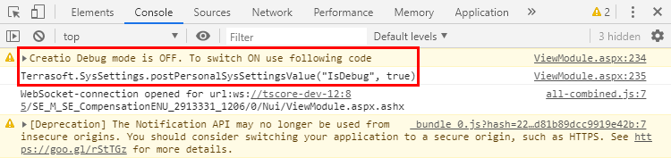
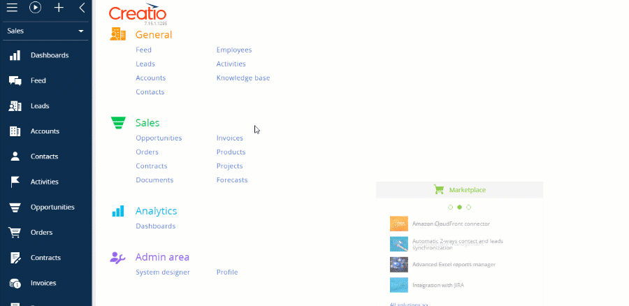
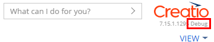

Front-end отладка — отладка клиентской части приложения Creatio, которая представлена конфигурационными схемами (модулями), написанными на языке JavaScript.
Интегрированные инструменты отладки
Отладка исходного кода конфигурационных схем выполняется непосредственно из браузера. Для этого используются интегрированные инструменты разработчика, которые предоставляют все браузеры, поддерживаемые Creatio.
Чтобы запустить инструменты отладки, необходимо в браузере выполнить команду:
- Chrome: F12 или Ctrl + Shift + I.
- Firefox: F12.
- Internet Explorer: F12.
Все поддерживаемые браузеры предоставляют одинаковый набор инструментов отладки клиентского кода. Наиболее распространенные и часто используемые инструменты отладки описаны ниже. Более детально возможности отладки с помощью браузерных инструментов описаны в документации:
- Инструменты разработчика Chrome
- Инструменты разработчика Firefox
- Средства разработчика Internet Explorer
Скрипты и точки останова
С помощью инструментов разработчика можно посмотреть полный список скриптов, подключенных к странице и загруженных на клиент. Открыв любой скрипт, можно установить точку останова (breakpoint) в том месте, где необходимо остановить выполнение программного кода. В остановленном коде можно просмотреть текущие значения переменных, выполнить команды и т. д.
Чтобы установить точку останова:
- Откройте необходимый файл скрипта (например, выполнив его поиск по имени комбинацией клавиш Ctrl+O или Ctrl+P).
- Перейдите к строке кода, на которой необходимо установить точку останова (например, выполнив поиск по скрипту по имени метода).
-
Установите точку останова.
Способы добавления точки останова:
- Щелкните по номеру строки.
- Нажмите клавишу F9.
- Выберите в контекстном меню Добавить точку останова .
Кроме этого, можно использовать условную точку останова (conditional breakpoint), для которой задается условие, при котором точка останова сработает.
Остановку выполнения также можно инициировать непосредственно из кода командой debugger.
Управление выполнением отладки
После того как выполнение кода прерывается в точке останова, выполняется проверка значений переменных стека вызовов. Затем выполняется трассировка кода с целью поиска фрагментов, в которых поведение программы отклоняется от предполагаемого.
Команды для пошаговой навигации по коду в отладчиках браузеров:
- приостановить/продолжить выполнение скрипта (1);
- выполнить шаг, не заходя в функцию (2);
- выполнить шаг, заходя в функцию (3);
- выполнять до выхода из текущей функции (4).
Дополнительно браузер Chrome предоставляет еще две команды для управления выполнением:
- отключить все точки останова (5);
- включить/отключить автоматическую остановку при ошибке (6).
Детальную информацию о возможностях и командах навигационной панели для конкретного браузера смотрите в соответствующей документации.
Использование консоли браузера
Консоль браузера позволяет:
- выполнять команды JavaScript;
- выводить отладочную информацию;
- выводить трассировочную информацию;
- выполнять замеры и профилирование кода.
Для этого используется объект console.
Вызов команд JavaScript
- Откройте консоль браузера, перейдя на вкладку Console, либо откройте ее в дополнение к отладчику клавишей Esc.
- Вводите в консоли команды на языке JavaScript и запускайте их на выполнение нажатием Enter.
Вывод отладочной информации
В консоли можно выводить отладочную информацию различного характера:
- информационные сообщения;
- предупреждения;
- сообщения об ошибках.
Для этого используются соответствующие методы объекта console.
| Метод | Описание | Chrome | Firefox | Internet Explorer |
|---|---|---|---|---|
| console.log(object [, object, ...]) | Выводит в консоль аргументы, разделяя их запятыми. Используется для вывода различных сообщений общего назначения. | + | + | + |
| console.info(object [, object, ...]) | Аналогичен методу log(), но выводит сообщения в другом стиле, за счет чего позволяет акцентировать внимание на их важности. | + | + | + |
| console.warn(object [, object, ...]) | Выводит в консоль сообщение предупреждающего характера. | + | + | + |
| console.error(object [, object, ...]) | Выводит в консоль сообщение об ошибке. | + | + | + (8+) |
Для каждого типа выводимого сообщения в консоли применяется свой стиль.
Приведенные методы console поддерживают форматирование выводимых сообщений. То есть, можно использовать в тексте выводимых сообщений специальные управляющие последовательности (шаблоны), которые при выводе будут заменяться на соответствующие им значения — аргументы, дополнительно передаваемые в функцию, в порядке их очередности.
Методы console поддерживают следующие шаблоны форматирования.
| Шаблон | Тип данных | Пример использования |
|---|---|---|
| %s | Строка | console.log("%s — один из флагманских продуктов компании %s", "Creatio sales", "Terrasoft"); |
| %d, %i | Число | console.log("Платформа %s впервые была выпущена в %d году", "Creatio", 2011); |
| %f | Число с плавающей точкой | console.log("Число Пи равно %f", Math.PI); |
| %o | DOM-элемент (не поддерживается IE) | console.log("DOM-представление элемента <body/>: %o", document.getElementsByTagName("body")[0]); |
| %O | Объект Java Script (не поддерживается IE, Firefox) | console.log("Объект: %O", {a:1, b:2}); |
| %c | Стиль CSS (не поддерживается IE) | console.log("%cЗеленый текст, %cКрасный текст на синем фоне, %cБольшие буквы, %cОбычный текст", "color:green;", "color:red; background:blue;", "font-size:20px;", "font:normal; color:normal; background:normal"); |
Трассировка и проверки
С помощью методов консоли браузера можно выполнять трассировку и проверку выражений.
| Метод | Описание | Chrome | Firefox | Internet Explorer |
|---|---|---|---|---|
| console.trace() | Выводит стек вызовов из точки кода, откуда был вызван метод. Стек вызовов включает в себя имена файлов, номера строк, а также счетчик вызовов метода trace() из одной и той же точки. | + | + | + (11+) |
| console.assert(expression[, object, ...]) | Выполняет проверку выражения, переданного в качестве параметра expression. Если выражение ложно, то выводит в консоль ошибку вместе со стеком вызовов (console.error()), иначе — ничего не выводит. Метод позволяет обеспечить соблюдение правил в коде и быть уверенным, что результаты выполнения кода соответствуют ожиданиям. С его помощью можно выполнять тестирование кода — если результат выполнения будет неудовлетворительным, будет отображено исключение. | + | + (28+) | + |
Профилирование и замеры
С помощью методов консоли браузера можно замерять время выполнения кода.
| Метод | Описание | Chrome | Firefox | Internet Explorer |
|---|---|---|---|---|
| console.time(label) | Включает счетчик миллисекунд с меткой label. | + | + | + (11+) |
| console.timeEnd(label) | Останавливает счетчик миллисекунд с меткой label и публикует результат в консоли. | + | + | + (11+) |
С помощью методов консоли можно выполнить профилирование кода и вывести стек профилирования, содержащий подробную информацию о том, сколько времени и на какие операции было потрачено браузером.
| Метод | Описание | Chrome | Firefox | Internet Explorer |
|---|---|---|---|---|
| console.profile(label) | Запускает профайлер Java Script, затем показывает результаты под меткой label. | + | + (при открытой панели DevTools) | + (10+) |
| console.profileEnd(label) | Останавливает профайлер Java Script. | + | + (при открытой панели DevTools) | + (10+) |
Результаты профилирования отображаются в браузерах:
- Chrome — на вкладке Profiles;
- Firefox — на вкладке Perfomance;
- Internet Explorer — на вкладке Profiler.
Режим клиентской отладки isDebug
Режим клиентской отладки isDebug необходим для получения подробной информации об ошибках приложения Creatio и их отслеживании в коде.
В обычном режиме работы в браузере выполняется минификация кода. Это означает что сборка клиентских скриптов осуществляется в файл all-combined.js. Файл собирается в момент создания сборки и содержит всю функциональность. Включение режима isDebug отключает сборку и минификацию *.js-файлов и позволяет получить перечень клиентских скриптов в виде отдельных файлов.
Настройка режима отладки isDebug
-
Определите текущий статус режима клиентской отладки.
Откройте консоль браузера по клавише F12 или с помощью комбинации клавиш Ctrl+Shift+I.
Кроме статуса режима клиентской отладки, в консоли будет отображен код для его активации или деактивации.
 -
Включите режим клиентской отладки
Это можно сделать следующими способами:
- Выполнить в консоли браузера код:
- Изменить системную настройку Режим отладки (код isDebug).

- Выполнить в консоли браузера код:
-
Чтобы применить изменения, обновите страницу или нажмите F5.
После включения режима клиентской отладки возле номера версии сайта отобразится индикатор Debug.

На рисунках ниже показаны примеры отображения в консоли информации об ошибке при выключенном и включенном режиме isDebug.